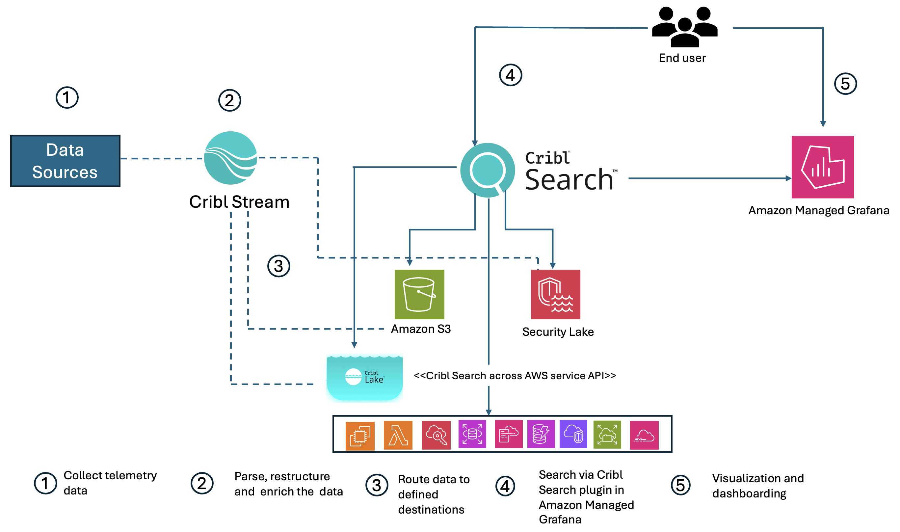

Trong môi trường số ngày nay, các tổ chức phải đối mặt với thách thức khi quản lý lượng dữ liệu vận hành ngày càng tăng trên hạ tầng của họ — log, metric, trace từ các ứng dụng và hệ thống.
Thông tin này chứa chìa khóa để hiểu sâu hơn và cải thiện hiệu năng, nhưng để dùng được nó một cách hiệu quả, các tổ chức cần một pipeline quan sát (observability pipeline) có khả năng mở rộng, có thể cấu hình (customizable), để thu thập, xử lý và định tuyến dữ liệu đến các điểm đích phù hợp.
Cribl là đối tác trong mạng lưới APN của AWS, cung cấp giải pháp quản trị dữ liệu tập trung và khả năng định tuyến có thể cấu hình cho lượng lớn dữ liệu vận hành và bảo mật.
Amazon Managed Grafana dùng để trực quan hóa dữ liệu đã được xử lý qua Cribl, biến chúng thành các dashboard có thể hành động được, với thông tin theo thời gian thực.
Việc tích hợp Cribl Search với Amazon Managed Grafana mở ra khả năng giám sát, phân tích mạnh mẽ hơn, giúp ra quyết định dựa vào dữ liệu nhanh hơn, tin cậy hơn, và trong quy mô lớn hơn.

Cribl Search có thể truy vấn dữ liệu từ các nguồn như Amazon S3, Cribl Lake, Amazon Security Lake hoặc các dịch vụ native AWS qua APIs, mà không cần phải index trước. Từ kết quả tìm được, gửi tiếp qua Cribl Stream tới các hệ thống SIEM (Security Information and Event Management) để phân tích.
Grafana sau đó được dùng để tạo dashboard thời gian thực, hiển thị việc sử dụng tài nguyên, chi phí, và hiệu suất trên các vùng AWS và dịch vụ liên quan.
Tạo dashboard riêng cho ứng dụng: độ trễ, tỉ lệ lỗi, trải nghiệm người dùng, và khả năng drill-down để phân tích chi tiết các giao dịch.
Hiển thị sự kiện bảo mật qua dashboard chuyên dụng, cải thiện tốc độ phản ứng với sự cố và điều tra. Cribl hỗ trợ giám sát liên tục các sự kiện bảo mật, làm báo cáo tuân thủ, và nâng cao khả năng phát hiện mối đe dọa.
Dùng các token API để bảo đảm giao tiếp an toàn giữa Cribl và Amazon Managed Grafana. Truy cập phần “API Credentials” trong Cribl dashboard để lấy Client ID, secret,…
Vào Amazon Managed Grafana > Plugins > “Add new connection” > tìm plugin “Cribl” > thêm kết nối bằng thông tin Cribl.
Trong Grafana, dùng tab Query, nhập truy vấn mẫu để lấy dữ liệu VPC Flow Logs trong 15 phút gần nhất, nhóm theo trạng thái log mỗi một phút.
Chuyển từ dạng biểu đồ thời gian sang dạng bảng để xem chi tiết từng bản ghi log, tìm bất thường, theo dõi đường đi của các request,… Ví dụ truy vấn lấy 1.000 bản ghi từ dataset để hỗ trợ điều tra.
Việc tích hợp giữa Cribl và Amazon Managed Grafana tạo ra một pipeline quan sát có thể tùy biến, tập trung quản lý dữ liệu, tăng cường bảo mật và tuân thủ, đồng thời trực quan hóa dữ liệu để hỗ trợ quyết định hành động. Đây là giải pháp hữu ích cho các doanh nghiệp muốn observability ở quy mô lớn và sẵn sàng cho tương lai.